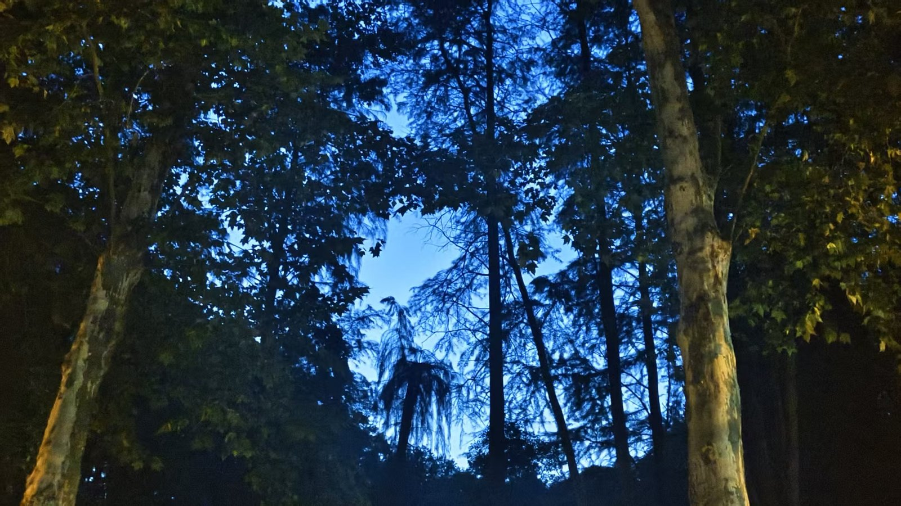

天黑之前到的
到的时候太阳已经落下去一半，天是蓝的，湖面比天更暗一点。岸边的灯先亮起来了，一盏一盏排过去，全都倒映在水里，连成一条断断续续的线。
那天几乎没有风。水面平得像一块玻璃，倒影比岸上的东西还清楚。

抬头全是叶子
沿着湖走，不知不觉就走到树底下。武汉的树长得很密，抬头只剩下一小块一小块的天，蓝得有点不真实。
我在这儿站了很久。不是在看什么，就是站着。城里走路总是很急，湖边好像没有理由急。
一个城市的湖，比它的楼更能让人记住它。 —— 那天的手机备忘录
下一站
继续 →